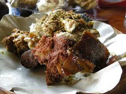

Be Guling Recipe

Babi Guling is a traditional Balinese dish that features a whole roasted pig, known for its rich flavors and cultural significance. The preparation of Babi Guling involves marinating the pig with a mixture of spices such as turmeric, coriander, lemongrass, and garlic, then slow-roasting it over an open fire. This meticulous cooking process results in tender, juicy meat and crispy, golden-brown skin. Often served during special ceremonies and celebrations, Babi Guling is accompanied by an array of side dishes including lawar (a Balinese salad), steamed rice, and spicy sambal. This iconic dish not only highlights the culinary artistry of Bali but also reflects the island's communal and festive spirit.
ingredients
- whole pig (suckling pig is often used)
- tablespoons turmeric, finely grated
- cloves garlic, minced
- stalks lemongrass, finely chopped
Steps
- In a large bowl, mix the finely chopped turmeric, garlic, lemongrass, shallots, galangal, ginger, coriander seeds, black pepper, white pepper, cumin seeds, fennel seeds, shrimp paste, kaffir lime leaves, bay leaves, and salt. Add a bit of coconut oil to make a paste.
- In another bowl, combine the chopped pork meat, pork liver, grated coconut, green and red chilies, turmeric, garlic, shallots, lemongrass, galangal, ginger, coriander seeds, black pepper, white pepper, cumin seeds, fennel seeds, and salt. Mix well until evenly distributed.
- Rub the marinade paste all over the inside and outside of the pig, ensuring it is thoroughly coated. Let it marinate for at least 2-4 hours, preferably overnight, in the refrigerator.
- Fill the cavity of the pig with the prepared stuffing mixture, making sure it is evenly distributed. Sew the cavity shut using kitchen twine to keep the stuffing inside during roasting.